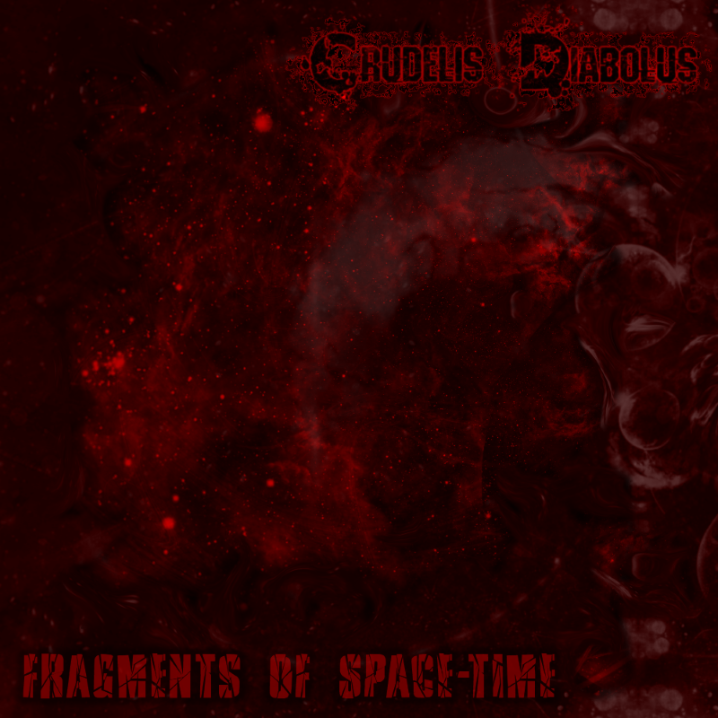
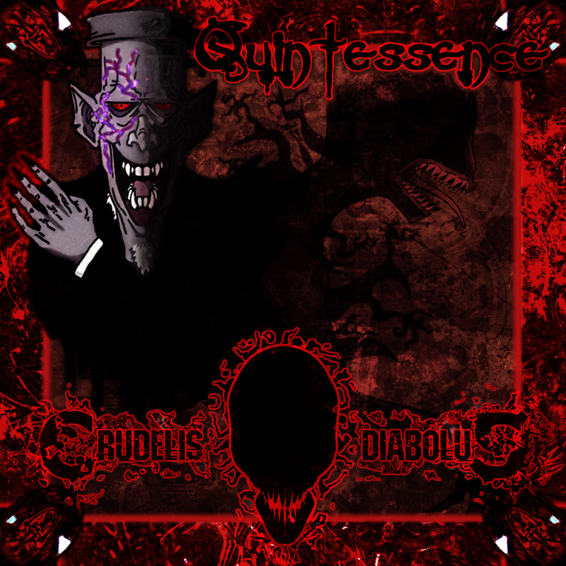
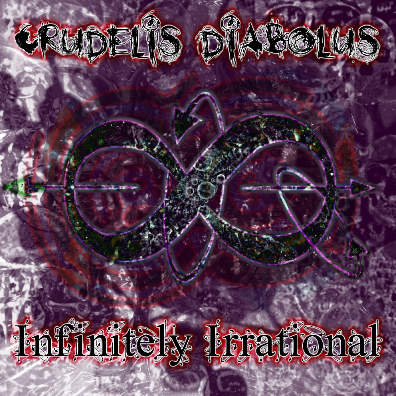
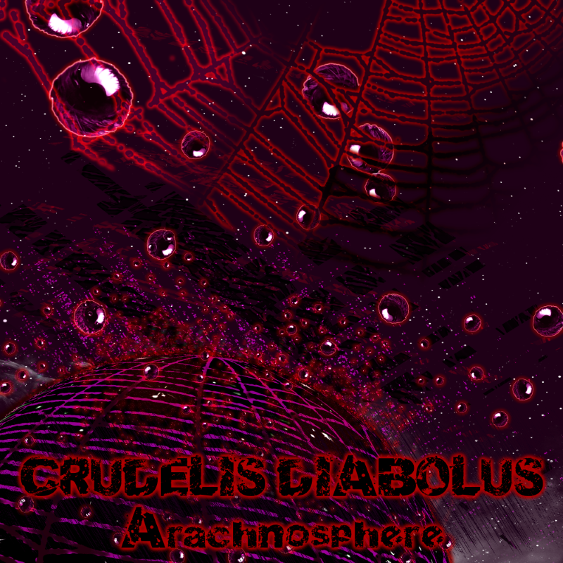
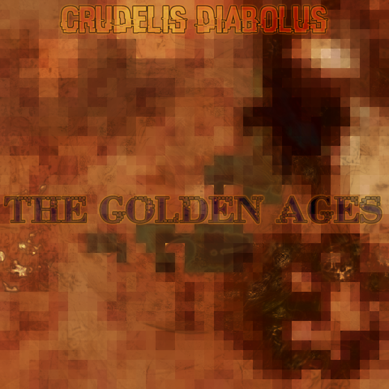

Olen Joni Puljujärvi, matematiikan opiskelija Helsingin yliopistossa, suomen kielen huoltaja, harrastelijakielitieteilijä,
‑muusikko, ‑filosofi ja ‑websuunnittelija — sekä tieteiden ja taiteiden ystävä.
I am Joni Puljujärvi, a mathematics student in the University of Helsinki, a Finnish grammar nazi, a hobbyist
linguist, musician, philosopher and web designer — and, of course, a friend of both science and art.
Mielenkiintoni kohteita ovat matematiikassa erityisesti logiikka ja joukko-oppi, jotka ovat koko modernin matematiikan perusta.
Sivuainevalinnoiksi ovat muodostuneet tietojenkäsittelytiede sekä teoreettinen fysiikka. Lisäksi olen kiinnostunut teoreettisesta
filosofiasta ja kielitieteistä (ja vähän kaikesta muustakin).
In mathematics, my more specific interests lie mostly on logic and set theory, which are the basis of all modern mathematics.
My minor subjects are computer science and theoretical physics. In addition, I am greatly interested in theoretical philosophy and linguistics
(and a bit of everything else, as well).
Harrastuksinani muun muassa sävellän musiikkia taiteilijanimellä Crudelis Diabolus. Lisää informaatiota löytyy
Musiikki-välilehdestä. Harrastan myös kirjallisuutta, ja etenkin tieteis- ja fantasiakirjallisuus ovat lähellä
sydäntäni. Lukemisen lisäksi kirjoitan itse suhteellisen paljon. Tällä hetkellä tekeillä on Jumalaton näytelmä ‑nimellä kulkeva
mustalla huumorilla höystetty romaanin mittoihin pyrkivä scifi-härpäke.
As one of my hobbies, I compose music under the name of Crudelis Diabolus. More information can be found on the
Music tab. I am also into literature, especially science fiction and fantasy genres. Along with reading, I also write
quite a lot. At the moment I am in the middle of writing a black-humoured sci-fi piece called Jumalaton näytelmä (finnish for “Undivine
Comedy”, literally “A Godless Drama” or “The Profane Comedy”).
Taidetta, uskoisin.Art, I suppose.
Videopelit ovat niin ikään tärkeitä, vaikkei niiden pelaamiseen nykyään enää aikaa yhtä paljon olekaan. Kuulun tällä hetkellä vielä nimettömään
indie-pelinkehitys-ryhmään. Vastaan suurimmilta osin pelien musiikista ja olen mukana ideoinnissa, tarinapainotteisten pelien käsikirjoittamisessa
sekä jonkin verran grafiikassa — sekä websuunnittelussa. Pidän itseäni nimittäin myös websuunnittelijana. Sivu(sto)ja, joihin minut on päästetty
käsiksi, löytää Verkkosivut-välilehdestä.
Video games are an important thing to mention among my hobbies, although playing them is something I do not have that much time for
nowadays. I am a part of a yet unnamed indie game developer group. Mostly, I am responsible for the music of our games and take part in composing the
general ideas, as well as co-writing the storylines for story-driven games — and also web design. It happens to be that I consider myself a web
designer. Web sites I have been working on can be found on the Websites tab.
Tämä sivu on testattu selaimilla
Mozilla Firefox,
Google Chrome,
Opera ja
Internet Explorer. IE saattaa kylläkin rikkoa asioita, koska se nyt vain ei osaa (eikä Microsoft Edge vaikuta sen paremmalta). Lisäksi
Safari on hieman mysteeri, sillä Windowsin Safaria ei ole enää saatavilla enkä ole omenaihmisiä.
This page has been tested with browsers
Mozilla Firefox,
Google Chrome,
Opera and
Internet Explorer. IE may break things, though, since it just does things wrong at times (and Microsoft Edge does not seem to be any
better in that matter). In addition, Safari is a bit of a mystery since they stopped developing it for Windows and I am not an Apple person.
Sivua on viimeksi muokattu kello .
This page was last modified at .
Musiikki
Music
Luon suhteellisen omaperäistä musiikkia taiteilijanimellä Crudelis Diabolus. Tyyli vaihtelee ja seikkailee niin häilyvästi
mitä erinäisimpien genrejen rajoilla, etten edes yritä kuvailla sitä, vaan annan näytteen, jollaiseksi kelpaa vallan mainiosti esimerkiksi alla näkyvä
Arachnosphere.
I create relatively eccentric music under the name of Crudelis Diabolus. My style varies and wanders so vaguely on a variety
of genres that I do not even try to describe it, but instead give you an example, for which purpose my track Arachnosphere suits just fine.
Lisää informaatiota tästä harrastuksesta ja sen tuottamasta auditiivisesta kummallisuudesta (ja kauneudesta, etten sanoisi) on saatavilla
osoitteessa crudelisdiabolus.com.
More information about this pastime activity and the sonic strangeness (and beauty, if you ask me) is available at
crudelisdiabolus.com.
Verkkosivut
Websites
Tämä portfolio
This Portfolio
URL:
Websuunnittelu, graafinen ulkoasu, ylläpito, kaikki sisältö
Web design, graphics, administration, all content
Tämä portfoliosivu on kirjoitettu standardien mukaisella HTML5:llä, CSS3:lla ja JavaScriptillä. Osa dynamiikasta perustuu laajasti käytettyyn
jQuery-JavaScript-kirjastoon. Yleisestikin pyrin kirjoittamaan jokaisesta luomastani tai ylläpitämästäni internetsivustosta validia standardien
mukaista HTML-koodia.
This portfolio page is written in standard HTML5, CSS3 and JavaScript. Some of the dynamics are based on widespread jQuery JavaScript
library. Generally, I aim at writing pure valid HTML whenever I design a website.
Erinäisten enemmän tai vähemmän taiteellisten sielujen muodostama tiivis internetyhteisö, jonka sivuston teknisestä ylläpidosta
vastaan suurimmaksi osaksi minä.
An internet community of more or less artistic souls, or a group of friends, whose website is mostly maintained by me.
Web design, graphical interface, administration, texts
2000-luvun alkupuolen kulttivideopelille Pekka Kana 2 omistettu sivusto, joka isännöi fanien itse tekemiä tasoja ja
muita resursseja peliä varten. Pelin kehittäjän julkaistua lähdekoodin sivuston jäsenet kehittävät modernia versiota pelistä useille
eri alustoille.
A website, dedicated to a cult classic video game called Pekka Kana 2 (Pekka the Rooster 2), that hosts custom game levels
created by fans of the original game. After the game developer released the source code, members of PK2Lib are trying to develop a modern
version of their favourite jump ’n’ run, for many different platforms.
Vuonna 2013 osallistuin National Novel Writing Month -tapahtumaan, jossa tarkoituksena on kirjoittaa
romaani yhdessä kuukaudessa. Tarkalleen ottaen tarkoitus olisi saada aikaan 50 000 sanaa 30 vuorokaudessa. Ryhdyin siis marraskuussa 2013 kirjoittamaan
romaania nimeltä Jumalaton näytelmä ja sainkin kirjoitettua sitä pari lukua, nimittäin 6 262 sanaa. Epäonnistuminenhan NaNoWriMostani tuli,
mutta mainio tarinanalku siitä syntyi.
In 2013, I took part in the National Novel Writing Month, where you are supposed to write a novel in a month. More
precisely, you should write 50 000 words in 30 days. So, on November 2013, I started to write a novel called Jumalaton näytelmä (the name is
Finnish for “Undivine Comedy”, a reference to Dante’s Divine Comedy). I did manage to write a couple of chapters, 6 262 words.
Of course, it was a failure as a NaNoWriMo novel but a great start for a fine story.
Alla on romaanin ”synopsis” eli käytännössä sen takakansiteksti.
Below you can see a translation of the “synopsis” (I would rather call it a back cover introduction text or something like that).
Kun koko maailma on yhtä aikaa sekä rappiolla että voimiensa tunnossa ja jumalia riittää joka lähtöön, sekasortoa tuskin voi välttää
– ja kaikki on yhtä jumalatonta näytelmää. Kun pahamaineinen Anomalia kuulee jonkun havittelevan kaikkivoipuuden avaimia, hänen ei auta kuin lähteä
tärvelemään tämän jonkun suunnitelmaa: olihan kaikkivoipuus viime kerralla aiheuttaa koko Aurinkokunnan tuhon.
When the whole world is on the top of both its degeneration and its glory and there are deities everywhere, it is hardly possible to avoid
havoc — and it is all an undivine comedy. When the infamous Anomaly hears of someone trying to get their hands on the keys of almightyness, he has no
other option than to engage in messing up this someone’s plan: last time almightyness was involved in anything, the whole Solar System was on the brink
of destruction.
Projektia en ole missään nimessä hylännyt, vaan aion jatkaa sen kirjoittamista inspiraation iskiessä.
I have not forgotten or forsaken the project but am going to continue writing, whenever some inspiration emerges.
Klaanon on minun ja noin 15–20 muun kirjoittajan yhteinen pitkäaikainen tarinaprojekti, joka on aikojen saatossa paisunut useiden
tuhansien A4-sivujen pituuteen. Alkujaan tekstiroolipelinä syntynyt projekti kehittyi vuosien kuluessa pikemminkin yhteisen romaanin kirjoittamiseksi kuin
roolipelaamiseksi. Kehitys ei jäänyt siihen, sillä pelkäksi romaaniksi kutsuminenkin olisi vähättelyä. Ensinnäkin pituutta on jo romaanisarjan verran,
joten mikäli tarina joskus painettaisiin fyysiseksi, saataisiin aikaan useampikin raamattu. Toisekseen, Klaanon on tätä nykyä multimediaprojekti. Esimerkiksi
Profeetan valtakunta -niminen kokonaisuus on toteutettu osittain videopelinä ja välivideoina, kuvitetun tekstin seassa. Lisäksi kyseinen julkaisu
todella painettiin tekstin osalta fyysiseksi, kuvitetuksi kirjaksi.
Klaanon (or Clanon in English) is a long-term stroy project of mine — and from 15 to 20 other writers’. During the
years, it has swollen into size of thousands of A4-sized pages. It started out as a text roleplay game but eventually writing Klaanon evolved rather into
writing a multi-authored novel than playing an RPG. The evolution did not stop there, though: it would be an understatement to say it were just a novel.
First, it has the length of a full-sized series of novels, so, if it ever were to be printed into a physical form, we would get more than just a one Bible
of this stuff. Second, Klaanon has become more of a multimedia project. For instance, a chapter that was called Profeetan valtakunta (Finnish for
The Kingdom of the Prophet) was a collection of, in addition to the text and illustration, a video game and cutscene videos. The release was also
actually printed as a real physical illustrated book.
Grafiikka
Graphics
Vaikka humoristisesti kutsunkin graafista taidettani ”grafiikan väärinkäyttämiseksi”, harrastan yllättävänkin paljon hassua kuvanmuokkausta,
graafista suunnittelua ja muuta mukavaa. Tähän mennessä kaikki Crudelis Diaboluksen julkaisujen kansikuvat ovat omia tekeleitäni. Lisäksi tällä sivulla on
esillä jonkin verran pikselitaidetta. Verkkosivuja, joiden graafista suunnittelua olen ollut toteuttamassa, löytää (mikäli etsii) varmaankin
Verkkosivut-välilehdestä.
Even though I describe my graphical art as “gaphics abuse”, there is surprisingly much of image manipulation and graphical design and
whatnot that I actually do. So far the cover images of every release by Crudelis Diabolus has been created by myself. In addition, there is some pixel art
presented on this page. Websites the graphical outfit of which I have been designing can be found (if you are looking for that sort of thing) most likely
on the Websites tab.
Albuminkannet
Album Covers





Kansitaiteet kokonaisuudessaan ovat nähtävissä Crudelis Diaboluksen DeviantArt-galleriassa.
Full cover art for each release is available on the DeviantArt gallery of Crudelis Diabolus.